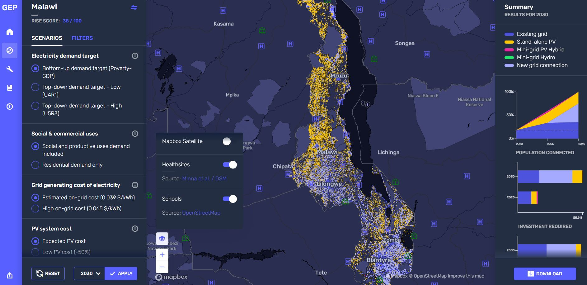

GEP Explorer
Access GEP Explorer service here
The most up-to-date version of the GEP is V.3 (Climate GEP) launched in July 2024!
All input and output data behind the GEP-Explorer are available at Energydata.info. Simply type the name of your country of interest and “GEP” in the search option, and voilà!
Overview
The GEP Explorer is an open access, interactive, online platform that allows overview of electrification investment scenarios for a selection of countries. The scenarios present how to achieve universal electricity access in two steps. The first step is an outlook for an intermediate investment strategy (up to 2025). The second is explores full electrification by 2030. The user is able to easily move through 96 scenario combinations to meet the access goals.

GEP Explorer allows customized rendering. The user can also select base maps and other available layers (e.g., location of Health & Education facilities) and overlay them with results from the electrification investment scenarios.

The number, type and parameterization of electrification investment scenarios along with their inherent assumptions are presented in the following slides in the form of ‘levers’. In the next phase of the project, both scenarios and assumptions will derive from the annual GEP update. The process is open to everyone!
Informing the 96 electrification investment scenarios was based on two types of data; GIS related and non-GIS related. Both have been collected and cured based on suggested guidelines available here.
GEP Explorer is open source. That is, it can be configured and used locally and independently of the online server. More information is available in the interoperability section.
Target Audience
The GEP Explorer aims to support first-order engaging discussions between:
High-level country counterparts (politicians, government officials, managers)
Financiers and Investors
Consultants
Practitioners
NGOs and IGOs
It can also be used to provide investment outlook info for regular processes. Possible examples include the IEA WEO, WBG GTF, WBG SEAR, UN-HLPF, EMP-Africa, EMP-Asia Pacific etc.